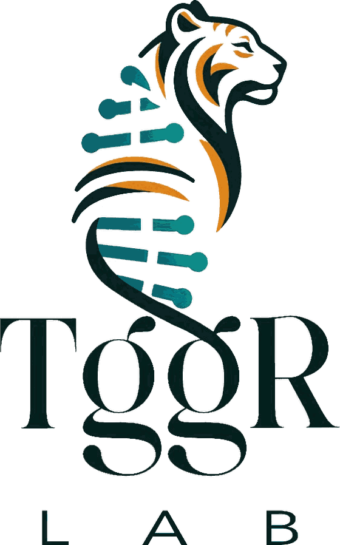

Translational genetics & genomics
Genetics Institute · Tel Aviv Sourasky Medical Center4 tools3 public reposlast push 2026-10-03
A medical genetics lab, and the instruments that came out of it.
We look for the genes behind rare disease in the families who come to the Genetics Institute, then work out what those genes do. Along the way we built the things below. Press one.

Tools
01
Pellaeon
ChimeraX in plain English
on toolshed02
GPCompaRe
283 receptors, on and off
beta03
CO₂ monitor
incubator, ESP32, DIY
calibrate04
Bench Mate
bench tools, offline, phone
PWA · v0.1.0Protocol 01 · how a project runs
Gene discovery, one family
- Family referred to the Genetics Institute. Pedigree drawn at intake: consanguineous, 2 affected
- Trio exome, in house timer 4 wk
- Filter to variants that segregate with disease. Candidates: 1
- Functional assay tailored to the gene timer 6–18 mo
- Diagnosis to the family. Counselling. Write it up.
Materials
- Sequencing
- In-house NGS, exome and genome
- Analysis
- Bioinformatics, segregation, population data
- Models
- Patient cells, animal models, protein structure
- Output
- Diagnosis, mechanism, sometimes a target